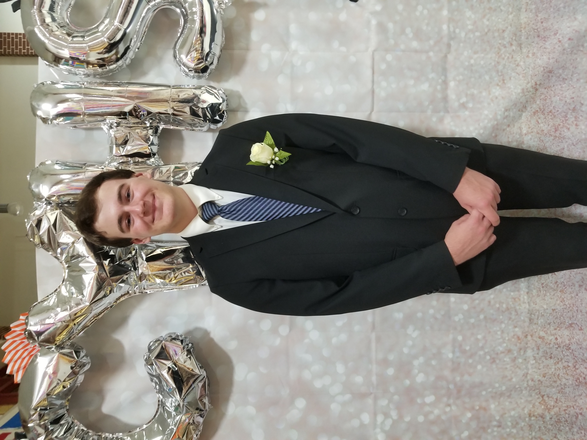

Joshua Tyson

Hello! My name is Joshua Tyson I'm a GDD major, and this is my homepage for 235! I'm interested in a decidedly ecclectic amount of things, ranging from video games, writing, reading, watching anime, staring into the void that is the wall of my room as I struggle to think of the best way to solve a problem in code, and petting animals. You might have noticed one of these is not like the rest. That's right! I do in fact like playing video games. I hope to get a basic understanding of proper web design out of this class, and I hope RIT has given me a solid foundation to base my future off of. Here are some links to my projects in this class: